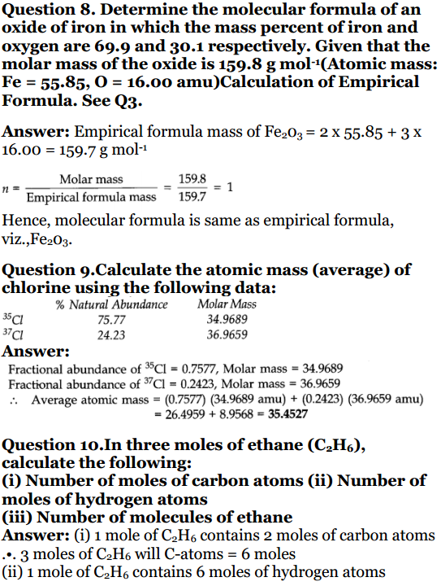
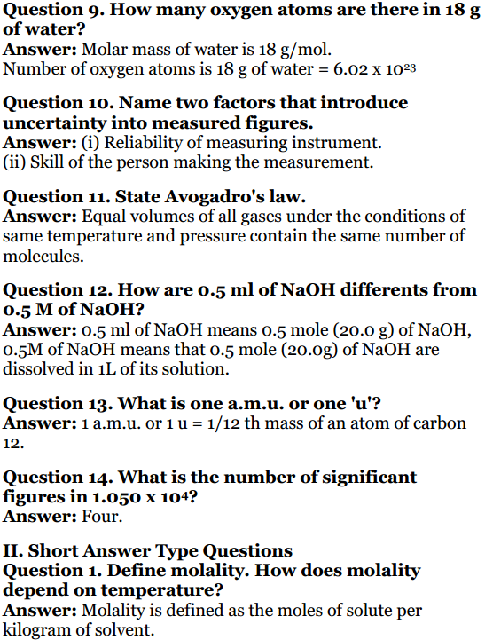
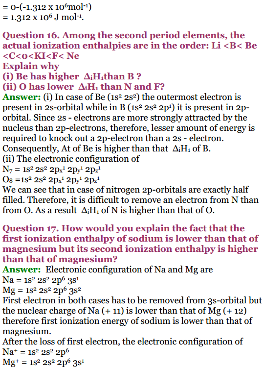
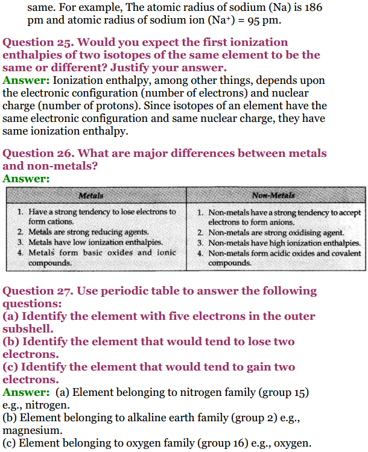

NCERT Solutions for Class 11 Chemistry: For students who want to go the extra mile and understand more and more concepts, NCERT solutions are perfect for you. NCERT solutions for class 11 chemistry helps students cover all the topics in detail. Students have the liberty and can choose any topic of their own from Class 11 Chemistry. They can download the Class 11 Chemistry NCERT Solutions, which they want to study with the comfort of their house.
NCERT Solutions for Class 11 Chemistry
- Chapter 1 Some Basic Concepts of Chemistry
- Chapter 2 Structure of The Atom
- Chapter 3 Classification of Elements and Periodicity in Properties
- Chapter 4 Chemical Bonding and Molecular Structure
- Chapter 5 States of Matter
- Chapter 6 Thermodynamics
- Chapter 7 Equilibrium
- Chapter 8 Redox Reactions
- Chapter 9 Hydrogen
- Chapter 10 The sBlock Elements
- Chapter 11 The pBlock Elements
- Chapter 12 Organic Chemistry: Some Basic Principles and Techniques
- Chapter 13 Hydrocarbons
- Chapter 14 Environmental Chemistry
NCERT Solutions for Class 11 Chemistry PDF
NCERT Exemplar Class 11 Chemistry Solutions
- Chapter 1 Some Basic Concepts of Chemistry
- Chapter 2 Structure of Atom
- Chapter 3 Classification of Elements and Periodicity in Properties
- Chapter 4 Chemical Bonding and Molecular Structure
- Chapter 5 States of Matter
- Chapter 6 Thermodynamics
- Chapter 7 Equilibrium
- Chapter 8 Redox Reactions
- Chapter 9 Hydrogen
- Chapter 10 The s-Block Elements
- Chapter 11 The p-Block Elements
- Chapter 12 Organic Chemistry: Some Basic Principles and Techniques
- Chapter 13 Hydrocarbons
- Chapter 14 Environmental Chemistry
CBSE Class 11 Chemistry Lab Manual
- Introduction
- Basic Laboratory Techniques
- Determination of Melting point
- Determination of Boiling point
- Purification of Chemical Substances by Crystallisation
- To Prepare Crystals of Pure Copper Sulphate (
) from a given impure sample of the blue vitriol
- To Prepare Crystals of Potash alum (
) from the crude sample
- To purify impure sample of benzoic acid by the process of crystallisation
- Viva Questions with Answers on Purification of Chemical Substances by Crystallisation
- To Prepare Crystals of Pure Copper Sulphate (
- Experiments Based On pH Change
- Determine the pH values of hydrochloric acid at different strengths using; (i) pH papers and (ii) universal indicator solution
- To determine the pH of various samples of NaOH solution using: (i) pH paper, and (ii) universal indicator solution
- Determine the pH of solutions of some salts using pH paper or universal indicator
- Determine the pH of vegetable and fruit juices using pH paper and universal indicator
- Compare the pH of solutions of hydrochloric acid and acetic acid having same concentration
- Study the pH change in the titration of
with
using universal indicator
- (a) To study the change in pH of acetic acid (a weak acid) solution by addition of sodium acetate (b) To study the change in pH of ammonium hydroxide (a weak base) solution by the addition of ammonium chloride
- Viva Questions with Answers on Experiments Based On pH Change
- Effect of Change of Concentration on Chemical Equilibrium
- Quantitative Estimation (Volumetric Analysis)
- Prepare
sodium carbonate solution
- Prepare
- Prepare 250 ml of 5N
from the given 12N
- Prepare 250 ml of 2M
from the given 18M
- Determine the strength of the given sodium hydroxide solution. You are provided with
oxalic acid solution
- Determine the strength and molarity of the given solution of hydrochloric acid. Given is 0.05 M
solution
- The given solution contains 6.3 g of hydrated oxalic acid,

crystals per litre. Determine the value of n(no. of molecules of water of crystallisation). Provided 0.1 M - Determine volumetrically, the value of ‘n’ i.e., the number of water molecules of crystallisation in washing soda
, 7.0 g of which have been dissolved per litre of the given solution. Provided
- You are provided with the solution of a hydrogen carbonate of a monovalent alkali metal (M) with strength equal to 10.0 gms per litre. Find out the atomic mass of the metal (M).
- Viva Questions with Answers on Quantitative Estimation (Volumetric Analysis)
- Prepare
- Qualitative Analysis
- Detection of Elements in Organic Compounds

Move to Top of the page.
Class 11 Chemistry NCERT Solutions
NCERT solutions for class 11 chemistry has all the solutions to the questions given in the textbook. The solutions available are in depth and in the simplest way possible. Thus, this chemistry class 11 NCERT solutions ensures that the students have the utmost understanding of the topic. This will help the students beyond examination marks. This will help them develop a core understanding of the subject. Because this subject demands to understand rather than just memorizing solutions of class 11 chemistry. Here below we are providing you with the overview of all the chemistry class 11 chapters that are there in the NCERT textbook.
Chapter 1 Some Basics Concepts of Chemistry
This class 11 Chemistry NCERT chapter 1 explains the role that is played in everyday life by chemistry. Furthermore, this chapter will explain the laws of chemical combinations and the nature of the matter. In this chemistry class 11 chapter 1, students will go in details about Dalton’s atomic theory where the concepts of molecules and atoms are explained. Also, class 11 chemistry chapter 1 deals with the molecular masses and concepts of atomic masses.


Move to Top of the page.
Chapter 2 Structure of Atoms
This Chemistry ncert class 11 chapter 2 will be fundamental for atoms and thus students will get to know about the discovery of proton, electron, and neutrons. They will also study what isotopes, isobars, atomic numbers, etc is. This chapter also describes details of Thomson’s model along with its limitations. Besides this, it talks about Bohr’s model and Rutherford’s model and its limitations. There is some detail being thrown into the dual nature of light and matter, Heisenberg’s uncertainty principle, de Broglie’s principle, the shapes of s, d, and p orbitals, quantum numbers, etc. There are also topics like Hund’s rule and Pauli’s exclusion principle which are also discussed in this chapter.
Chapter 3 Periodicity in Properties and Classification of Elements
In this chapter, you will learn about a brief history of the periodic table and its development, the significance of classifying periodic table, how the present form of the periodic table was formed, etc. Furthermore, the information about the trends in the periodic table for atoms like ionic radii, radii, inert gas radii, electronegativity, electron gain, valency, etc. is more discussed in this chapter. A total of 40 questions are there in CBSE Class 11 Chemistry NCERT Solutions for students to practice.
  
Move to Top of the page.
Chapter 4 Chemical Bonding and Molecular Structure
This NCERT Chemistry class 11 chapter 4 will help you understand what a covalent bond and an ionic bond is. There are more details about the parameters of the bonds, covalent bond and it’s the polar character, the bond theory of valence, covalent bond and it’s geometry, resonance, etc. Furthermore, this chapter discusses the VSEPR theory, concepts of hybridization that involve s, d, and p orbitals, various shapes of some molecules, and many more. There are a total of 40 questions in this chapter that can help students to practice.
Chapter 5 States of Matter – Liquid and Gas
This chapter will make students understand about three states of matter along with the types of bonding and intermolecular interactions. There are also some insights about the boiling point and melting points given in the chapter. Furthermore, the roles of gas laws are discussed and how Gay lussac’s law, Boyle’s law, Avogadro’s law, etc are helping students understand their ideal behavior. Along with this, the Avogadro’s number, empirical deviation in the gas equation, and the ideal equation required for the numerical are illustrated.
Chapter 6 Chemical Thermodynamics
This chemistry class 11 chapter 6 helps with the concepts of various systems and their different types. There is also discussion provided about the surroundings in the form of heat, work, energy, intensive and extensive properties, and state functions. There is a discussion about the first law of thermodynamics in this chapter. It involves the enthalpy and internal energy, specific heat, heat capacity, measurement of heat, etc.
Chapter 7 Equilibrium
This chemistry NCERT Solutions class 11 chapter 7 talks about the concepts of equilibrium in chemical and physical processes and details related to the equilibrium’s dynamic nature. There are also some insights related to the law of mass action, the factors affecting equilibrium and the equilibrium constant as per Le Chatelier’s principle. Furthermore, the information about the acid strength, ionization of polybasic acids, Henderson equation, the concept of pH, etc are also discussed.
Chapter 8 Redox Reaction
This chapter will provide in-depth knowledge to students about the reduction and oxidation and various insights about the redox reactions. Furthermore, information about balancing the redox reactions, oxidation number, etc will also be provided. There are a total of thirty questions in the chapter that also discusses the loss and gains of electrons.
Chapter 9 Hydrogen
Through this chapter, you will learn about the occurrence of hydrogen and it’s position in the periodic table. Along with this, there will be some information about the isotopes, their properties and how they are prepared is also discussed in this chapter. Information related to interstitial and hydrogen ionic covalent bonds is also discussed in this chapter.
Chapter 10 S-block Elements
This chapter discusses the elements present in group 1 and 2. It discusses the electronic configuration along with their occurrence. Every first element in the group shows some anomalous behavior which is also discussed in this chapter. There are diagonal relationships like atomic radii, variation in terms of properties in ionization enthalpy, ionic radii, etc is also discussed. How some of the important compounds like sodium chloride, sodium carbonate, sodium hydrogen carbonate, and sodium hydroxide are prepared is also discussed in this chapter.
Chapter 11 Some P-block Elements
This chapter provides more of a general view of the p-block elements to the students. There is also in-depth and detailed information about the elements in group 13 being discussed in this chapter. Also, the variation of oxidation states and their properties is also discussed. The chemical and physical properties of boron along with its important compounds like boric acid, borax, boron hydrides, etc are discussed in this chapter.
Chapter 12 Organic Chemistry – Some Basic Techniques and Principles
This chapter talks more about various purification methods along with quantitative and qualitative analysis being used for it. Furthermore, information related to IUPAC nomenclature and classification of various organic compounds is also discussed in this chapter. Along with this, the electronic displacements occurring in a covalent bond in the form of electromeric effect, inductive effect, hyperconjugation, resonance are also discussed in-depth.
Chapter 13 Hydrocarbons
In this NCERT class 11 chemistry chapter 13, students will get to know in detail about the classification of hydrocarbons and their uses, properties, and related reactions. Furthermore, this chapter talks about alkanes, alkynes, and alkenes. It also talks about related nomenclature, physical properties, IUPAC names, chemical reactions, combustion, isomerism, etc.
Chapter 14 Environmental Chemistry
This chapter 14 Environmental Chemistry will talk about the environmental part of chemistry like environmental pollution related to air, soil, and water. Furthermore, all the chemical reactions happening in the atmosphere due to smog, major atmospheric pollutants, etc is also discussed. This final chapter in NCERT solutions for class 11 chemistry further discusses about ozone, acid rains and it’s reactions. A total of 20 questions will help students understand various alternative tools required for reducing pollution.
NCERT solutions for class 11 chemistry is the right recipe for students who want to go beyond marks in the exams. We will keep you updated on all exam related stuff on this website.
More Resources for CBSE Class 11